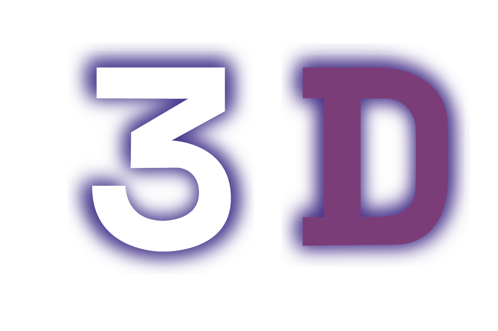
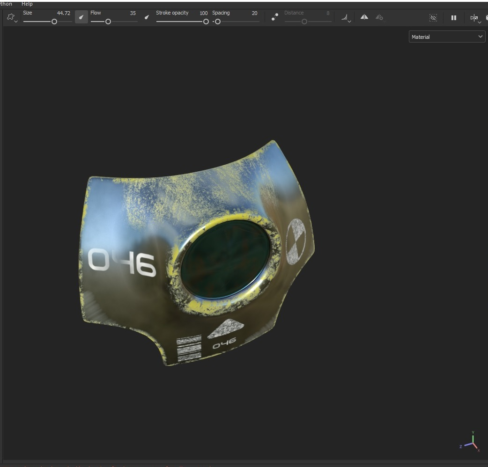
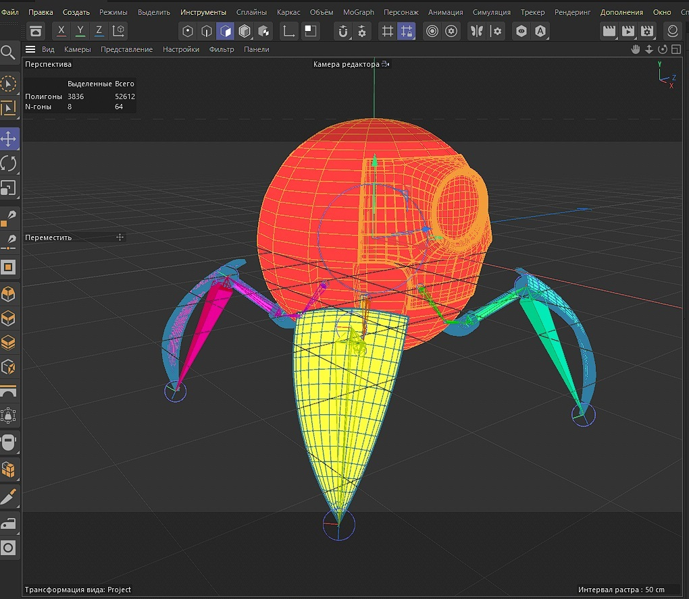
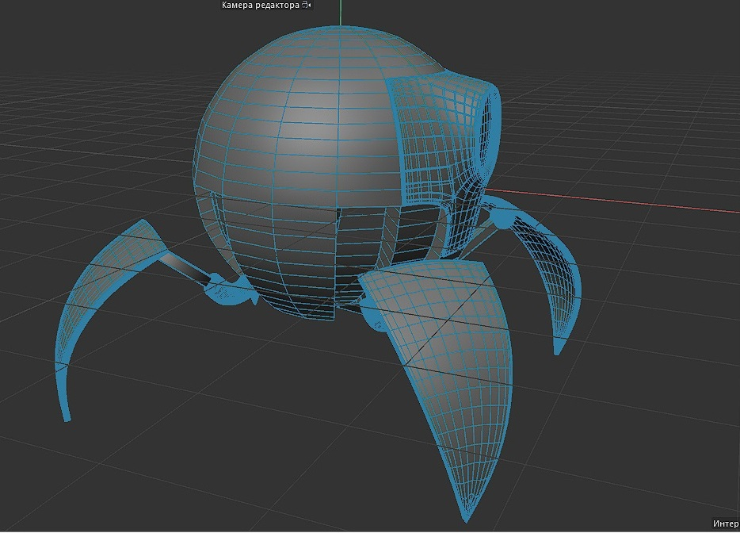
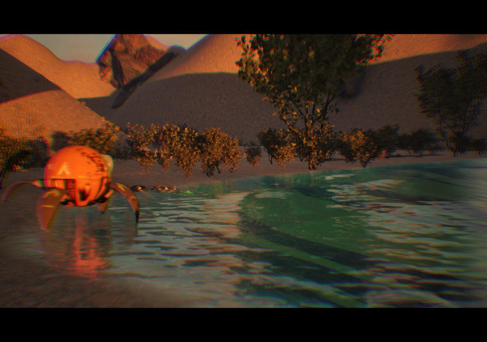

Robo
Категория: 3D Анимация
Официальный демо-ролик проекта






О проекте
Этот проект представляет собой высококачественную 3D-анимацию, созданную для демонстрации новых технологий. Видео включает сложные сцены с физически корректным освещением и реалистичными материалами.
Особенности производства:
- 1200 кадров анимации
- 2K текстуры
- Сложная симуляция жидкостей
83
часов рендеринга
5
анимационных сцен
3D
Адаптировано
// Разбор создания
Моделирование
Процесс создания 3D-моделей с нуля
Трекинг
Внедрение 3D-моделей в видео
Анимация
Процесс оживления моделей и настройки движений